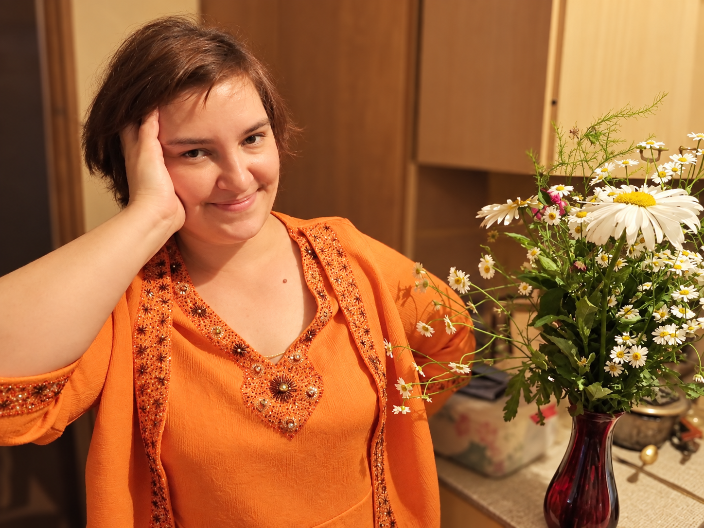
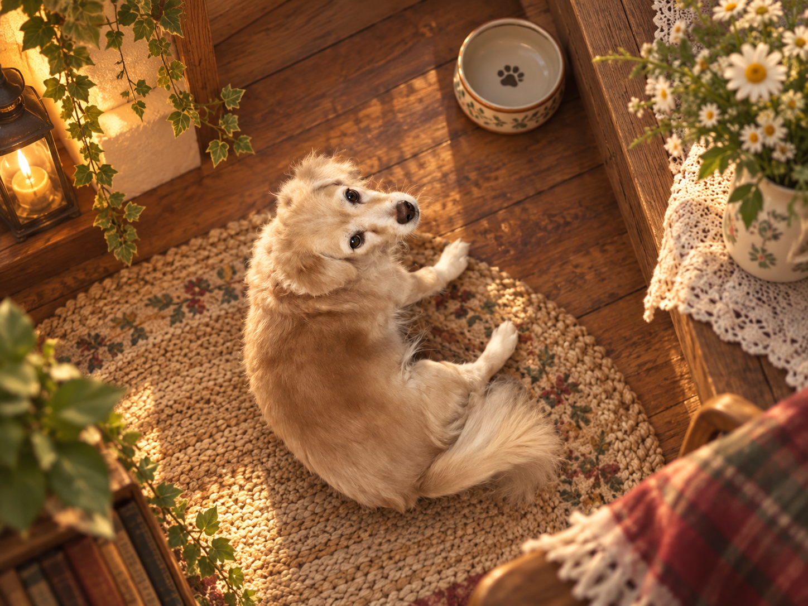
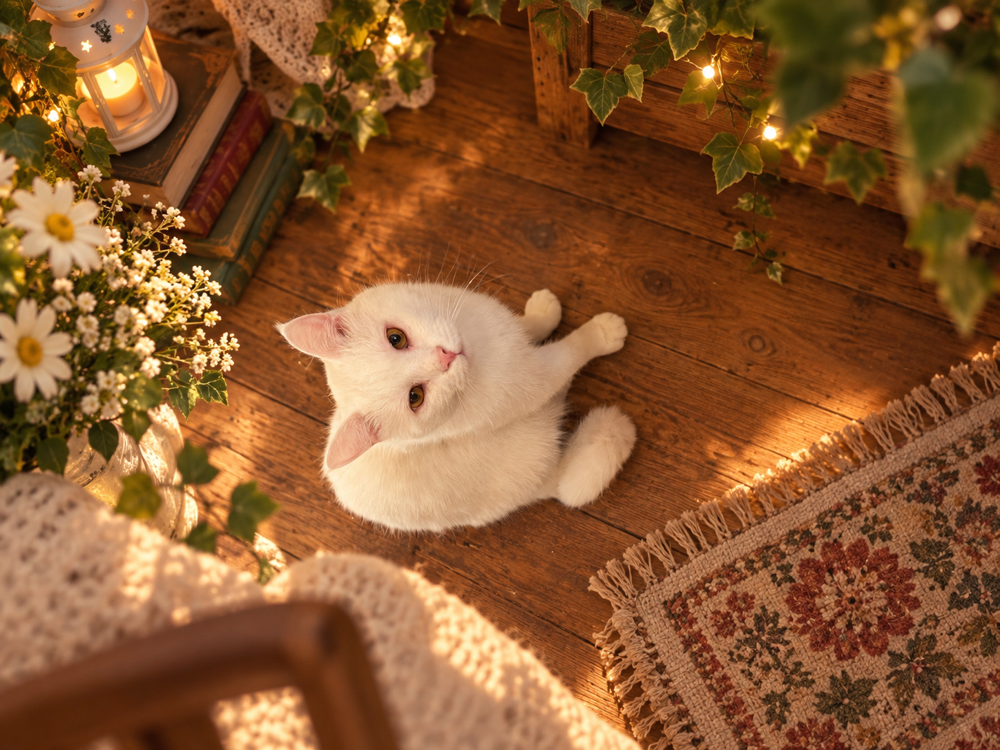
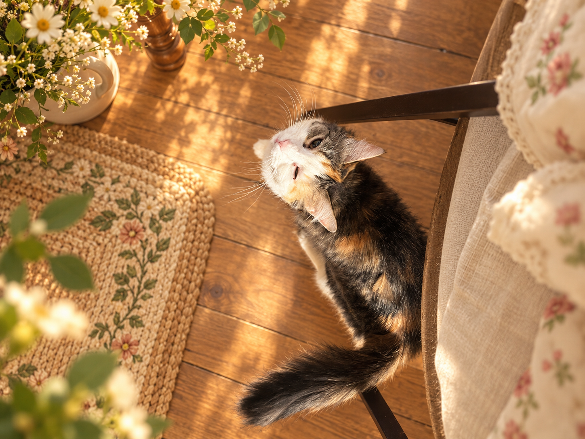
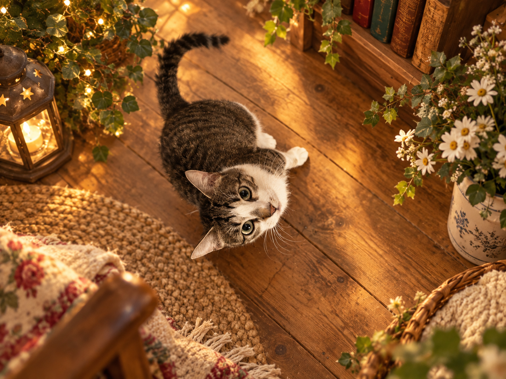
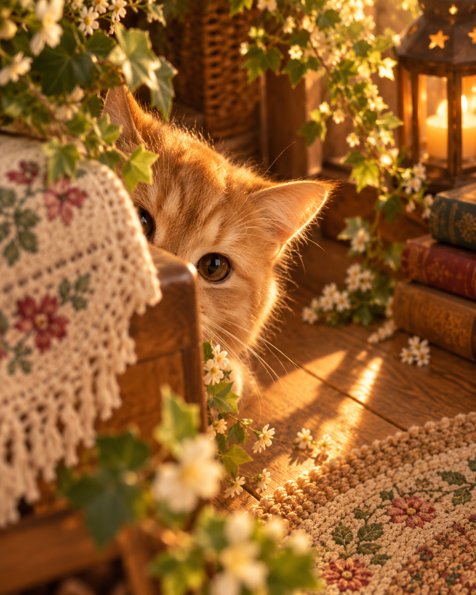
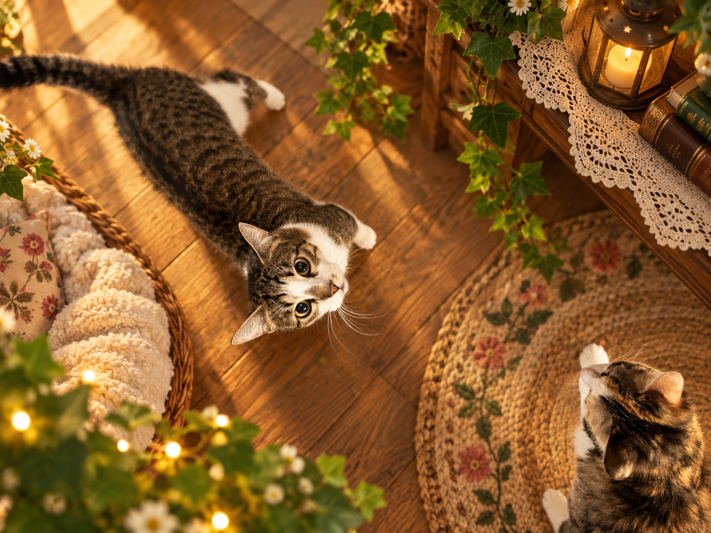

Мирон



прихожая
На тебе держалось гораздо больше, чем просто дом.
Мы привыкли к этому настолько, что не всегда замечали: порядок, еда, разговоры, переживания, наши проблемы, наши возвращения домой — за очень многим стояла ты.
Не потому что тебе всегда было легко.
А потому что ты снова и снова выбирала нас.
Сегодня хочется хотя бы на один день поменяться местами: ничего не держи. Просто будь дома. Мы рядом.
мамины цитаты
«Вся наша семья слегка придурковатая.»
Кажется, это одна из самых точных характеристик нашей семьи. И почему-то именно за это мы её любим.
43 года — это...
- 43года
- 2сына
- 4кота
- 1собака
- ∞поводов переживать
И каким-то чудом ты всё ещё нас всех терпишь.
кухня
Её территория
Здесь пахнет мантами и экспериментами. Здесь кого-то кормят раньше, чем успеют сказать «я не голодный». Здесь миски, кастрюли и вечная надежда, что после ужина на столе воцарится порядок.
Марсель смотрит так, будто дом принадлежит ему. Киза устраивается там, где удобно ей. Барон — где-то рядом, просто снова спрятался. Юля тоже из наших: ещё одна кошка, ещё один характер.
Подпись не «мама готовит». Подпись: ты снова всех собрала за одним столом.


комната сыновей
Две половины одного дома
Глеб
Мама, я люблю тебя без списка причин. За то, что ты осталась. За то, что резкость у тебя — не холод, а усталость человека, который слишком долго был за двоих. За то, что в глубине ты мягкая, даже когда дом требует быть железной.
Спасибо, что растила нас так, будто у нас всё равно будет хорошее будущее. Я хочу, чтобы ты в него верила до конца. Мы ценим тебя сильнее, чем получается сказать за ужином.
Мирон
Мама, спасибо, что ты есть. Что ты рядом, даже когда ворчишь. Что из тебя получается и строгость, и тепло — иногда в одну минуту.
Мы оба твои. Лысый персик и киндер сюрприз. Дом без тебя не складывается. Любим тебя. Очень.
сад
Окно в будущее
Тебе всегда хотелось, чтобы вокруг было живое. Не просто красиво — по-настоящему живое: цветы на окне, зелень, свет, дом, в котором становится уютнее не сразу, а понемногу.
Наверное, поэтому этот сад здесь именно про тебя.
Про то, что даже когда многое не получается вовремя, всё равно можно что-то посадить, переделать, начать сначала. Можно мечтать о ремонте, о поездках, о более спокойной жизни — и не считать, что для этого уже поздно.
Ты слишком долго думала о том, как сделать лучше всем вокруг. Поэтому хочется, чтобы дальше в твоей жизни было больше вещей, которые будут просто для тебя.
Больше красоты. Больше воздуха. Больше дней, в которых не нужно всё тащить на себе.
Сегодня тебе 43. И впереди ещё очень много того, что может расцвести.
жители
Маленькие, но важные
Собака Мина. Кошки Марсель, Барон, Юля и Киза. Барон снова где-то спрятался — это нормально. Он тоже домашний.


Мам, с днём рождения!
Сегодня тебе 43.
А для нас ты всё та же мама, которой можно позвонить с абсолютно любой проблемой.
Мы тебя любим.
Даже эта слегка придурковатая семья ❤️